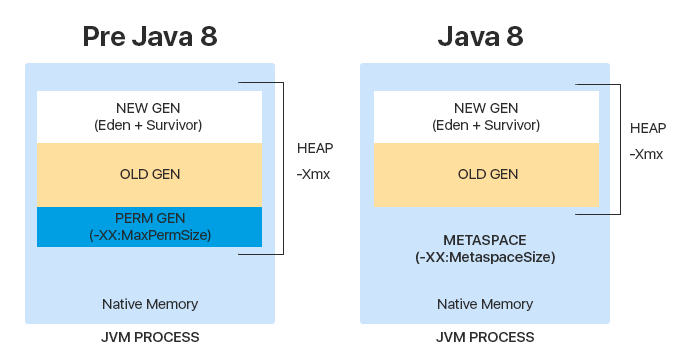
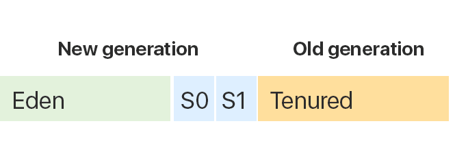
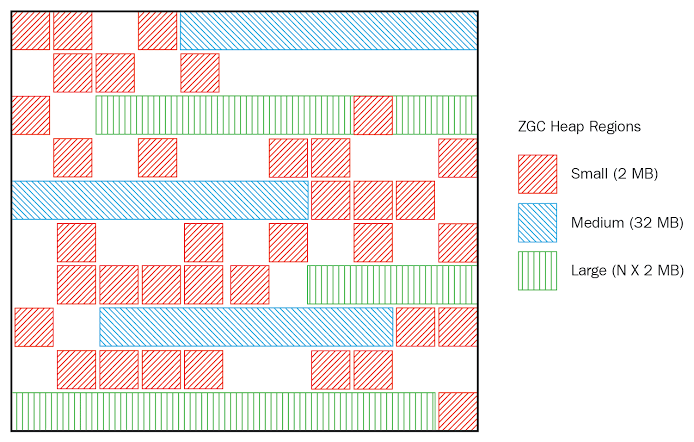
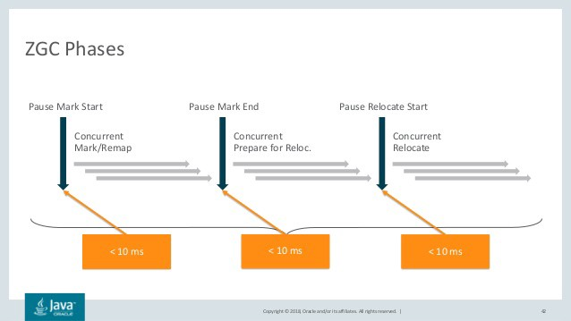
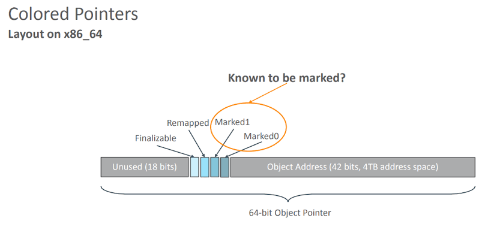

Java Garbage Collection
Contents
Java Garbage Collection¶
Heap¶
The Heap is divided into several parts called generations:
Young generation is a field, where recently created objects are stored;
Old (tenured) generation is a field, where long-life objects are stored;
Before Java 8, there was one more memory space — Permanent generation. it contained meta-information about classes, methods, statistical variables. After Java 8 was invented, all this information then became stored separately in the Metaspace.
Stack object access is thread-safe while heap access is not!

Why was the decision taken to get rid of Permanent generation?
First of all, it was because of the error connected with memory overflow. Since the Perm had a constant size and could not expand dynamically, sooner or later the memory ran out, an error was thrown and application crashed.
In contrast, Metaspace has a dynamic size, and during its execution, it can expand up to the memory size of the JVM.
Key Heap features:
If Heap space is full, Java throws java.lang.OutOfMemoryError
Access to the Heap is relatively slower in comparison to the Stack
To remove unused objects from the memory in the Heap, a Garbage collector is used
Unlike stack, a heap isn’t thread-safe and needs to be guarded by properly synchronizing the code
Garbage Collector¶
Garbage collector is a programme that works in JVM and is intended to delete objects that are no longer used or needed.
Different JVMs can have different algorithms of garbage collection, so there are a variety of different garbage collectors in Java.
Heap memory is divided into 2 sections called Generations: New generation and Old generation.

New generation includes 3 regions: Eden, Survivor 0, and Survivor 1.
Old generation includes the Tenured region.
So what happens when we create a new object in Java?
Garbage Collectors in Java¶
G1 Garbage Collector¶
G1 is introduced in Java7. Oracle 9 Hotspot JVM comes with default G1 Garbage collection.
You can configure this for maximum pause time using flag -XX:MaxGCPauseMillis=n.
Lots of real-world studies say most of the objects (90%) garbage collected in a young generation or in first garbage collection or minor GC (also it depends upon applications). Who survived a couple of GCs(major GC), present in old memory (old objects) they will remain survive more than 95% times.
G1 Working¶
It does most of the work concurrently.
It uses non-continuous which enables G1 to deal with the very large heap efficiently.
Instead of dividing heaps into 3 spaces (old) like other Garbage Collectors like CMS (concurrent mark and sweep), Parallel etc, it divides heap memory in small chunks. These regions are fix-sized (about 2Mb by default)
Earlier
G1
Splitting into small regions helps G1 concurrently run and finish it off very quickly.
While running GC on Eden space all the survived objects get copied to unassigned space. The unassigned space becomes survivor space.
If all the objects in Eden space are garbage then it can be declared as Unassigned.
G1 is not run on whole heap memory at once like others Garbage Collectors, instead of this it always selects the regions which are full or almost full to minimizes the amount of work to free heap space.
G1 only stops the application at the beginning of the GC for boot strapping , this phase is called as Initial Mark.
While Application is executing it follow all the references and mark live objects, this phase called as Concurrent Mark.
When above phase(Concurrent Mark) is done then application again stops. for final cleanup is made, this phase called as Final Mark.
To move objects and reclaim heap memory, this phase called as Evacuation phase this phase is fast, called as Evacuation Phase.
“This is not good for small heaps” then it that case might be full GC is performed and might slow down overall executions. In that case increase the heap size or other Garbage collectors can be used.
G1 Extras¶
String deduplication¶
Many large-scale Java applications are currently bottlenecked on memory. Measurements have shown that roughly 25% of the Java heap live data set in these types of applications is consumed by String objects. Further, roughly half of those String objects are duplicates, where duplicates means string1.equals(string2)is true. Having duplicate String objects on the heap is, essentially, just a waste of memory.
Java provides two ways to handle duplicate strings and eliminate memory usage
1. By using String.intern() method:
String str = "abc";
String str = new String("abc").intern();
Notes:
Intern method is expensive and slow.
String.intern()is a native method, and calling a native method incurs massive overhead.The implementation used a fixed size (default 1009, can be set using
-XX:StringTableSize=N) hashtable so as the number entries grew, the performance became O(n).
2. By enabling string deduplication (only available with G1 garbage collector):
XX:+UseG1GC -XX:+UseStringDeduplication
Notes:
This option is only available from Java 8 Update 20 JDK release.
This feature will only work along with the G1 garbage collector.
You need to provide both
-XX:+UseG1GCand-XX:+StringDeduplicationJVM options to enable this feature.To check if it happens in your system you can use
-XX:+PrintStringDeduplicationStatisticsparameter.You can control this by using
-XX:StringDeduplicationAgeThreshold=3option to change when Strings become eligible for deduplication.
ZGC¶
It is a scalable low latency garbage collector designed to meet the following goals:
Z Garbage Collector (ZGC) is introduced in JAVA-11 as an experimental GC.
Pause times do not exceed 10ms.
Pause times do not increase with the heap or live-set size.
Handle heaps ranging from a few hundred megabytes to multi terabytes in size.
Properties¶
Concurrent
Region-based
Compacting=
NUMA-aware
Using colored pointers
Using load barriers
Working of ZGC¶
ZGC divides memory into regions, also called ZPages. ZPages are dynamically sized (unlike the G1 GC), which are multiples of 2 MB can be dynamically created and destroyed.
Here are the size groups of heap regions:
Small(2MB),
Medium(32MB)
Large(N * 2 MB)

Notes:
ZGC heap can have multiple occurrences of these heap regions.
After ZGC compaction, ZPages are freed up and inserted into a page cache called as ZPageCache.
ZPages in the page cache are ready to be reused to satisfy new heap allocations.
The page cache is critical for performance, as committing and uncommitting memory are expensive operations.
ZPages in the page cache represents the unused parts of the heap that could be uncommitted and returned to the operating system.
Phases of Z Garbage Collection¶

1. Pause Mark Start:
In this phase objects that have been pointed to roots. This includes walking through the live set of objects and then finding and marking them.
It starts with a scanning thread stack which gives the reference objects in heap.
After getting reference it will walk through all the graphs of objects(which are reachable).
It also remaps the live data after the end of the last phase(Pause Relocate Phase).
2. Pause Mark End:
This phase with a short pause of 1ms.
The pause time involved here depends only on the number of roots and the ratio of the sizes of the relocation set and total live set of objects.
This starts after completion of the first phase.
This starts with preparing concurrent relocation of objects and marks the regions it wants to compact.
Now we have all the information which objects are live so it starts with reference processing and moves to week-root cleaning.
Pause Relocate Start:
It triggers the actual region compaction.
It begins with root scanning pointing into the location set, followed by the concurrent reallocation of objects in the relocation set.
Colored Pointers¶
Colored pointers are one of the core concepts of ZGC.
It enables ZGC to find, mark, locate, and remap the objects.
It doesn’t support x32 or 32 bits operating systems.
Load Barrier uses this to detect whether the object is bad color then do the corresponding action (like remap means object is remapped to a different address). It is injected by the JIT compiler when the object is fetched from the heap.

the 64-bit object reference is divided as follows:
18 bits: Unused bits
1-bit: Finalizable
1-bit: Remapped
1-bit: Marked1
1-bit: Marked0
42 bits: Object Address
Explanations:
The first 18 bits are reserved for future use.
42 bits can address up to 4 TB of address space.
The Marked1 and Marked0 bits are used to mark objects for garbage collection. By setting the single bit for Remapped, an object can be marked not pointing to the relocation set.
The last 1-bit for finalizing relates to concurrent reference processing.